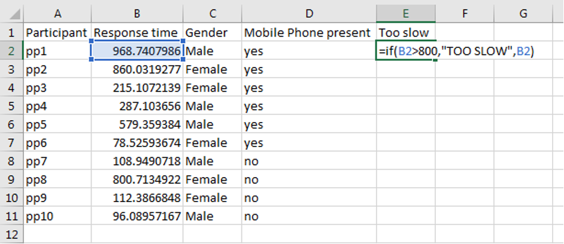

viewof if_q1_response = Inputs.number({label: ''});
correct_if_q1 = '3';
if_q1_result = {
if(if_q1_response == correct_if_q1){
return 'Correct!';
} else {
return 'Incorrect or incomplete.';
};
}If function
If formulas are very helpful for tidying data. Let us imagine in our experiment we want to remove all participants who were too slow, and we assume they just weren’t paying attention. Let’s remove all participants who took longer than 800ms to respond. We can do this participant by participant using “if” formulas.
In English, what we’re going to do is write a formula which looks at the participant’s response time, and if it is too slow, write “TOO SLOW”. If it’s not too slow, we’ll write down the respective response time. Let’s do this for one row:

Let’s relate this to the structure of an If formula generally. An “if” formula’s structure goes like so:
“=if(logical test,result if true, result if false)”
The logical test in our case was whether the cell B2 was greater than (>) 800: B2 > 800
The result we wanted if B2 was greater than 800 was the text “TOO SLOW”: “TOO SLOW”
The result we wanted if B2 was not greater than 800 was the value in B2: B2
So as a next step, make this formula for each row and then complete the following statement:
There were _____ participants who took more than 800ms, making them too slow.
Now let’s do another formula to remove participants who were too fast. We don’t think a participant can react quicker than 100ms in reality, so in the Too Fast column, write a formula for each row that will write “TOO FAST” if the response time is less than 100ms, or write the response time if it is not “TOO FAST”.
After writing these formulas, complete the following statement:
There were _____ participants who took less than 100ms, making them too fast.
viewof if_q2_response = Inputs.number({label: ''});
correct_if_q2 = '2';
if_q2_result = {
if(if_q2_response == correct_if_q2){
return 'Correct!';
} else {
return 'Incorrect or incomplete.';
};
}